Multi Dimensional Graph Queries with Neo4j
Data2Day Karlsruhe 2014
Peter Neubauer, Michael Hunger
derivative of "Node.Garden, Gallery of Computation" by Jared Tarbell / CC BY


←
→
#

Agenda
Introduction:
- Graph Database,
- Property Graph Model
- Use-Cases
- JOIN-Optimization
Dimensions
- Modeling, Examples
- Creating / Querying
What is a graph?
- A representation of a set of objects and their connections
Nodes
- Node
Relationships - directed
- Node
- Node
- RELATIONSHIP
Relationships - bi-directional
- Node
- Node
- RELATIONSHIP
General representation of data
- Bob
-
Book
- title
- "Graph Databases"
- Alice
- Has Read
- Friend Of
- Has Read
- Friend Of
Types of graph stores
- Network (simple graph)
- Triple store (Semantic Web, RDF)
- Hyper graphs
- Property graph
Property Graphs
- Nodes and relationships can be labeled (a kind of typing)
- Nodes and relationships have attributes
- Attributes have a name and a value of a given type - e.g. String, Integer, Decimal, Boolean
Property Graph Sample
-
Entity
- name
- Bob
- age
- 38
-
Book
- title
- "Graph Databases"
- authors
- "Ian Robinson, ..."
-
Entity
- name
- Alice
- age
- 34
-
Has Read
- date
- Jun-03
- rating
- 4
- Friend Of
-
Has Read
- date
- Dec-05
- rating
- 5
- Friend Of
Segue: Graphs in a Relational World
Tables
One table for Persons
Another one for Departments
A link table in between
for many-to-many relationships
JOINing them
This is the data
Explicit as a graph
Nodes, …
Nodes, Relationships and …
Nodes, Relationships and Labels.
Network and IT Operations Management
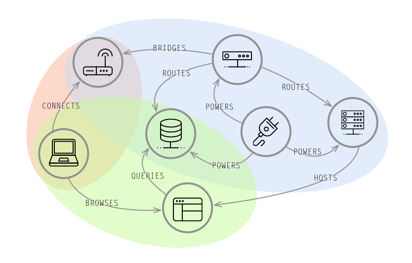
The interconnected physical, virtual, and application layers of a network are perfectly modeled in a comprehensive Neo4j graph.
Queries: Impact Analysis, Root Cause Analysis, Quality-of-Service Mapping, Asset Management
Social
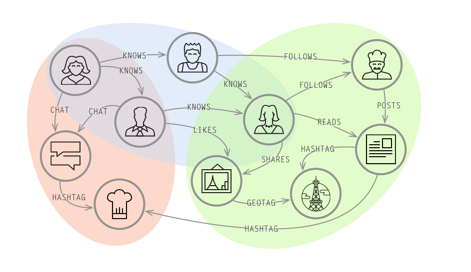
Family, friends and followers extend into a social graph which reveals patterns of similar behavior, influence, and implicit groups.
Queries : Friend Recommendations, Sharing & Collaboration, Influencer Analysis
Recommendations
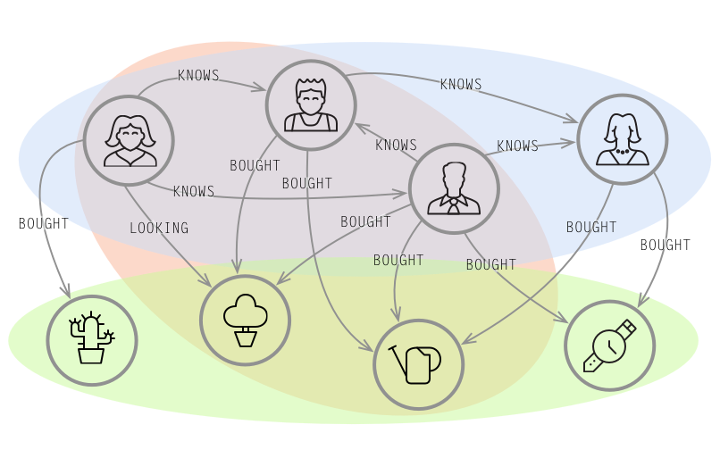
Connect the dots of seemingly unrelated interests and relationships to make recommendations that balance fresh with familiar.
Queries : Product, Social, Service, and Professional Recommendations
Identity and Access Management
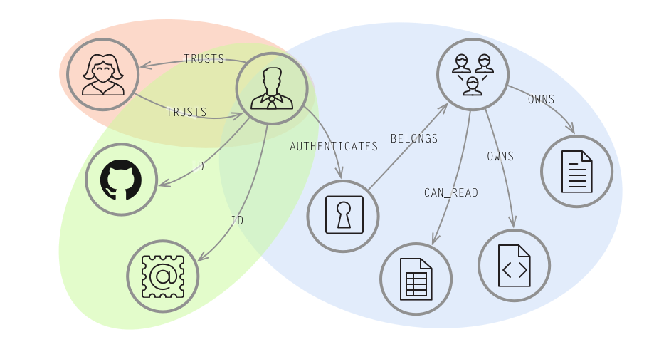
Who you are, how you belong, and what you’re permitted depends upon the relationships between you, an organization, and a system.
Queries : Access Management, Interconnected Group Organization, Provenance
Master Data Management
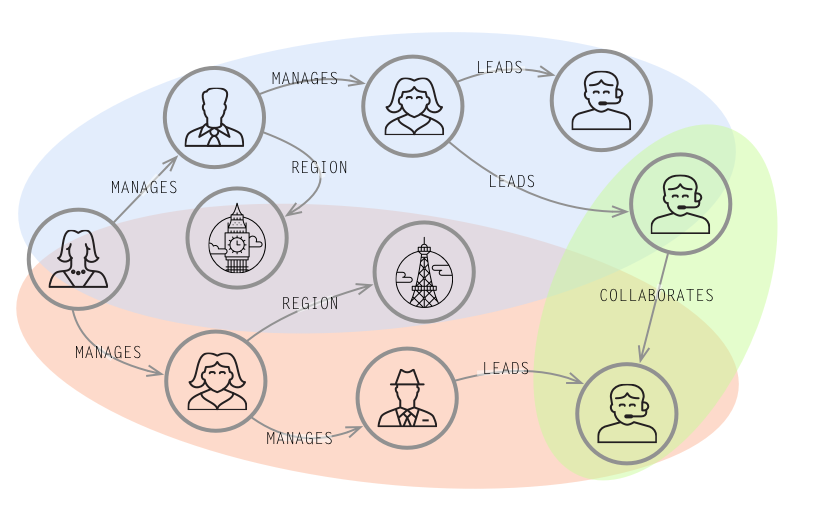
Organization and product lines are inherently shaped like graphs: deep hierarchies with top-down, lateral, and diagonal connections.
Queries : Cross Reference Business Objects, Organizational Hierarchies, Data Ownership
Digital Asset Management
Media library built around the relationships between digital assets and their attributes.
Queries : Access Management, Cataloging, Work Flow Processes
How do databases JOIN data?
- primary-key < — > foreign key relationships
- have to find / lookup matching keys
- across indexes and tables / collections
- for each join during each query
- computationally expensive
- depend on data volume and number of joins
- Is there another way ?
Cheap trick: prematerialize relationships
- store relationship-struct-list with node
- called ajacency-list
- direct pointer to relationship and other node
- no JOIN required, just following pointers
"Join"-Complexity
- One Relationship: O(1)
- N Relationships O(n)
- All N Relationships across M steps O(N^M)
- Relationship-Counts O(1) also by type and direction
Local Neighborhood Queries
- traverse 1..n steps out,
- collect, filter and project information
- not affected by total data volume, just neighbourhood size
- full neighbourhood size n-levels out grows exponetially though!
- there are special approaches
Special Query Use Cases - Graph Algorithms
- Shortest-Path algorithm
- Find connection between two known nodes
- Bidirectional implementation
- Routing: Dijkstra, A*
Data Modeling: Dimensions
- arbitrary values → properies
- boolean, small sets → labels
- lists → properties or linked lists
- order → linked list
- hierarchies → trees
- geo → 2-dim r-tree
- facets → n-dimensional tree
Utilizing Structure
- Graphs are also access structures
- Use graph structures to provide alternative access paths
- Fast traversals / access to subgraphs
- Nodes and subgraphs are datapoints embedded in link structures
- Called: in graph indexes
In Graph Indexes
- (Linked) lists
- Trees
- Multidimensional-trees
- Skip-list
- Streams (Activity-Streams)
- Hypergraph
Linked List: Event-List
- one-dimensional
- Linked List of Data Points
- Optionally Double Linked
- Optionally Skip-List
- Represent Order, Sequence
- Multiple Linked Lists with individual relationship-types
Tree: Time Tree
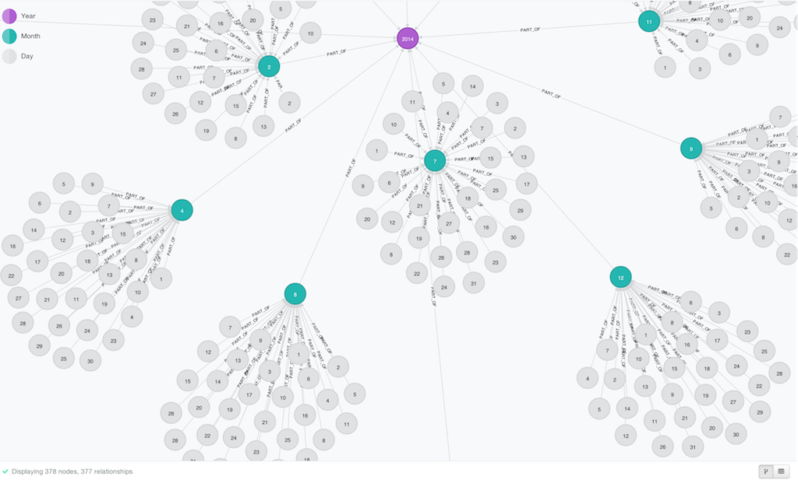
Tree: Time Tree
- two-dimensional: width and height
- split time by unit: root←year←month ←day←hour←minute, …
- granularity as needed
- create tree to root
- optional NEXT links per level
- attach datapoints to appropriate level
Tree: Bill of Material
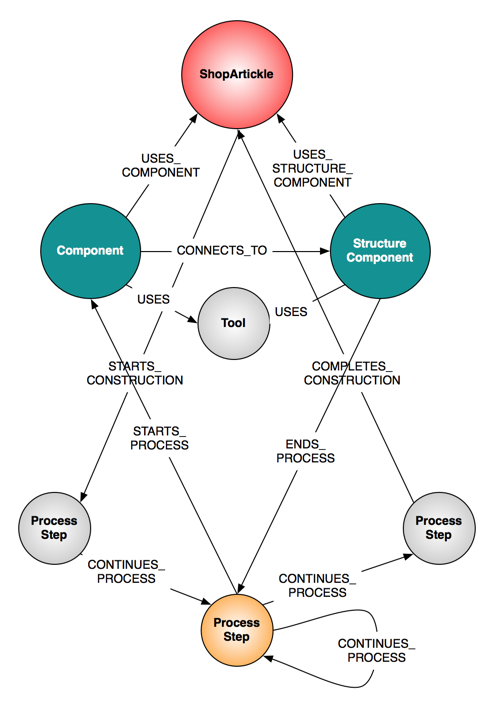
- everything can be deconstructed from a root
- broken into components, modules, parts
- machine, vehicle, factory, furniture
- combine structural tree with construction process tree
- store quanities, prices, volumes at lowest levels
- compute or aggregate on higher levels
2-dimensional Tree: R-Tree
- three dimensions: height, width, depth
- project surfaces points and polygons into a hierarchy
- fast search for containment
- retrace and filter for concrete outline
- e.g. Neo4j-Spatial
Multi-Dimensional-Tree: Facets
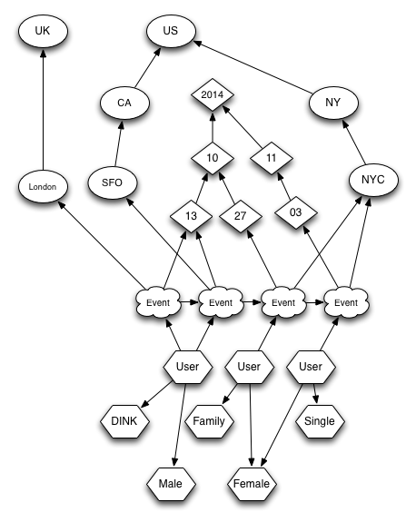
- many (variably structures) dimensions of datapoints
allow users to explore a dataset by also returning selected dimensinons
- good use of cypher collect() function
- combine several aspects in one big tree
- allows to aggregate over each or any dimension-group
Neo4j APIs
- Cypher query language
Neo4j-Server HTTP-APIs
- Cypher Endpoint
- Graph Algorithms
Server Extensions
- exposing HTTP Endpoints
- using Java Core API, or Kernel SPI
Cypher: Neo4j’s Graph Query Language
- Made for Graphs & Humans
- All about patterns
- First class graph concepts
- Derived from SparQL and SQL
- Declarative & Expressive
- Optimized for reading & understanding
- First class collection support
- Query, update, metadata
SQL vs. Cypher
SQL Older Women in IT-Department
Cypher
Cypher: Pattern Match
Analytics Query across Orders, Geo and Product Categories
Cypher: Filter Predicates
Analytics Query across Orders, Geo and Product Categories
Cypher: Project and Aggregate Results
Analytics Query across Orders, Geo and Product Categories
Cypher: Status
- Language well developed
Query Planner:
- current - rule based
- next - cost based
Runtime:
- current - Scala
- next - Java/dynamically compiled
Example Multifacetted Domains: E-Commerce
Example Multifacetted Domains: E-Commerce
Business-Transactions (e.g. Northwind)
- order → buyer → demography,
- order → seller → category, → history
- order → product → product categories,
- payment → cc / debit, → payment history
- logistics → address → city → state → country,
- warehouse → position → shelf → aisle → section,
- employee → manager sales hierarchy,
- time
Example Multifacetted Domains: Software Repositories
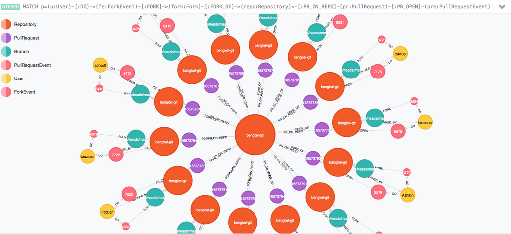
Example Multifacetted Domains: Software Repositories
Git:
- Tree of Commits → Branch → Repository
- Commit → Time,
- Commit → Parent Commits
- Diff → File → Commit
GitHub - Events
- Fork, Issue, Clone, Pull-Request, Review, Release, Team
Example Multifacetted Domains: Source Code
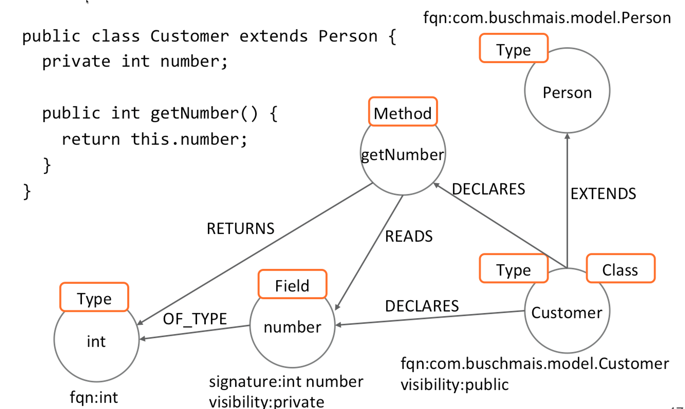
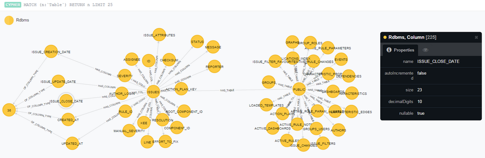
Example Multifacetted Domains: Source Code
Source Code / Software Projects
- → packages,
- → module dependencies,
- → call dependencies,
- → type dependencies,
- inheritance, composition, nesting,
- orthogonal → annotations
source: http://jqassistant.org
How to create multiple dimensions: Time Tree
Create A Time Tree
How to create multiple dimensions: GitHub
Comment on Issue
source:https://github.com/ikwattro/gh4j
How to create multiple dimensions: Java-API
- Create Tree’s top-down link to datapoints
- Create Lists by forward or backward linkin
- recursive method calls for hierachies
- keep nodes in maps for quick lookup during structure creation
- map object structures to the graph → static hierarchies
- Use a library, e.g. GraphAware Time Tree
How to create multiple dimensions: Java-API
Summary
- Graphs are well suited for complex connected structures
- Dimensions form structures on top of data points
- Easy to model and evolve
- Fast Querying across the structures
- Aggregation, collection, projection of results and facets
/
Status of the presentation
Cypher queries execution